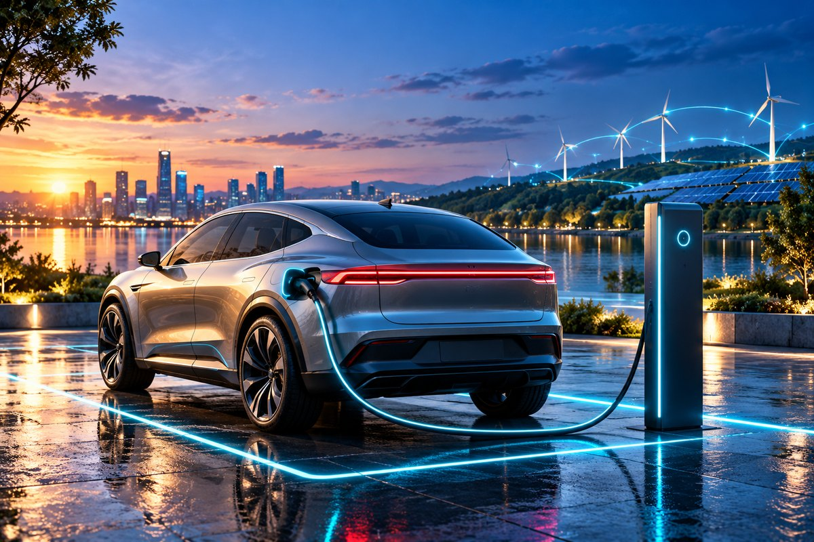
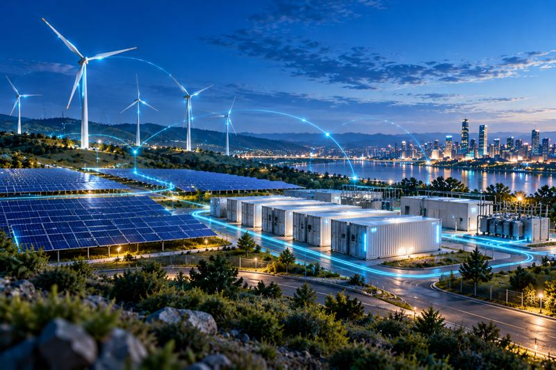

The Measure of a Technology Is What It Makes Possible.
Advanced packaging is the missing link between silicon carbide (SiC) and gallium nitride (GaN) chips and your system: lower stray inductance, better cooling, full chip potential.Advanced Packaging verbindet Chips aus Siliziumkarbid (SiC) und Galliumnitrid (GaN) mit Ihrem System: weniger Streuinduktivität, bessere Kühlung, volles Chip-Potenzial.
VEROTERA aims to lead the adoption of advanced semiconductor technologies, providing packaging solutions for energy efficiency and a sustainable future.VEROTERA bringt fortschrittliche Halbleitertechnologien in die Anwendung, mit Packaging-Lösungen für mehr Energieeffizienz und eine nachhaltige Zukunft.
We develop power modules that turn the advantages of wide-bandgap semiconductors into system performance, built on our own advanced packaging and Light‑activated Gate Driving. Our hybrid AI makes the decisions behind them traceable and reproducible from the very first step.Wir entwickeln Power-Module, welche die Vorteile von Wide-Bandgap-Halbleitern in System-Performance umsetzen, auf Basis unseres eigenen Advanced Packaging und Light‑activated Gate Driving. Unsere hybride KI macht die Entscheidungen dahinter vom ersten Schritt an nachvollziehbar und reproduzierbar.
Explore 
 Explore
Explore
 Solutions · Three PillarsLösungen · Drei Säulen
Solutions · Three PillarsLösungen · Drei SäulenFrom System Requirement to Qualified ProductVon der Systemanforderung zum qualifizierten Produkt
Five steps from your requirements to a module ready for series production, built on our proprietary light-activated power technology.Fünf Schritte von Ihren Anforderungen zu einem serienreifen Modul, auf Basis unseres eigenen Light‑activated Gate Driving.
Learn more →Mehr erfahren → Engineering Core
Engineering CoreHybrid Artificial IntelligenceHybrid Artificial Intelligence
How engineers and AI reach a reproducible, documented recommendation, from your requirement to the final design data.Wie Ingenieure und KI zu einer reproduzierbaren, dokumentierten Empfehlung kommen, von Ihrer Anforderung bis zu den finalen Designdaten.
Learn more →Mehr erfahren → About VEROTERAÜber VEROTERAWho We AreWer wir sind
Mission, the electrified world, what we build, how we work and our leadership.Mission, die elektrifizierte Welt, was wir entwickeln, wie wir arbeiten und unsere Geschäftsführung.
Learn more →Mehr erfahren →Deep-Tech for Wide-Bandgap Power ElectronicsDeep-Tech für Wide-Bandgap-Leistungselektronik
We turn the physical advantages of SiC and GaN into measurable benefits for your system.Wir machen aus den physikalischen Vorteilen von SiC und GaN messbaren Nutzen für Ihr System.
Three Pillars. One Partner.
The bridge between system-level demand and semiconductor innovation.Die Brücke zwischen Systemanforderung und Halbleiterinnovation.
- Full chip performance
- Efficient heat dissipation
- Stable parallel switching
- Faster time to market
- Volle Chip-Leistung
- Effiziente Entwärmung
- Stabiles Parallelschalten
- Kürzere Time-to-Market
- Joint development projects
- Tailored to your application
- Seamless path to series production
- Gemeinsame Entwicklungsprojekte
- Zugeschnitten auf Ihre Anwendung
- Nahtloser Weg zur Serienfertigung
- Traceable decisions
- Reproducible results
- On-prem AI: your data stays in-house
- Nachvollziehbare Entscheidungen
- Reproduzierbare Ergebnisse
- On-Prem-KI: Ihre Daten bleiben im Haus
The Electrified WorldDie elektrifizierte Welt
Wide-bandgap semiconductors are reshaping many fields of power conversion: higher efficiency, more power, less space, less heat.Wide-Bandgap-Halbleiter verändern viele Bereiche der Leistungswandlung: höherer Wirkungsgrad, mehr Leistung, weniger Bauraum, weniger Wärme.




Let's talk about your project.Lassen Sie uns über Ihr Projekt sprechen.
Start with a feasibility assessment or a co-development project. We will get back to you personally.Starten Sie mit einer Machbarkeitsbewertung oder einem Co-Development-Projekt. Wir melden uns persönlich bei Ihnen.
VEROTERA GmbH · Böhlerstraße 1 · 40667 Meerbusch, GermanyDeutschland · www.verotera.com · info@verotera.com
Images: AI-generated illustrations, not photographs of VEROTERA facilities or products.Bilder: KI-generierte Illustrationen, keine Fotos von VEROTERA-Standorten oder -Produkten.